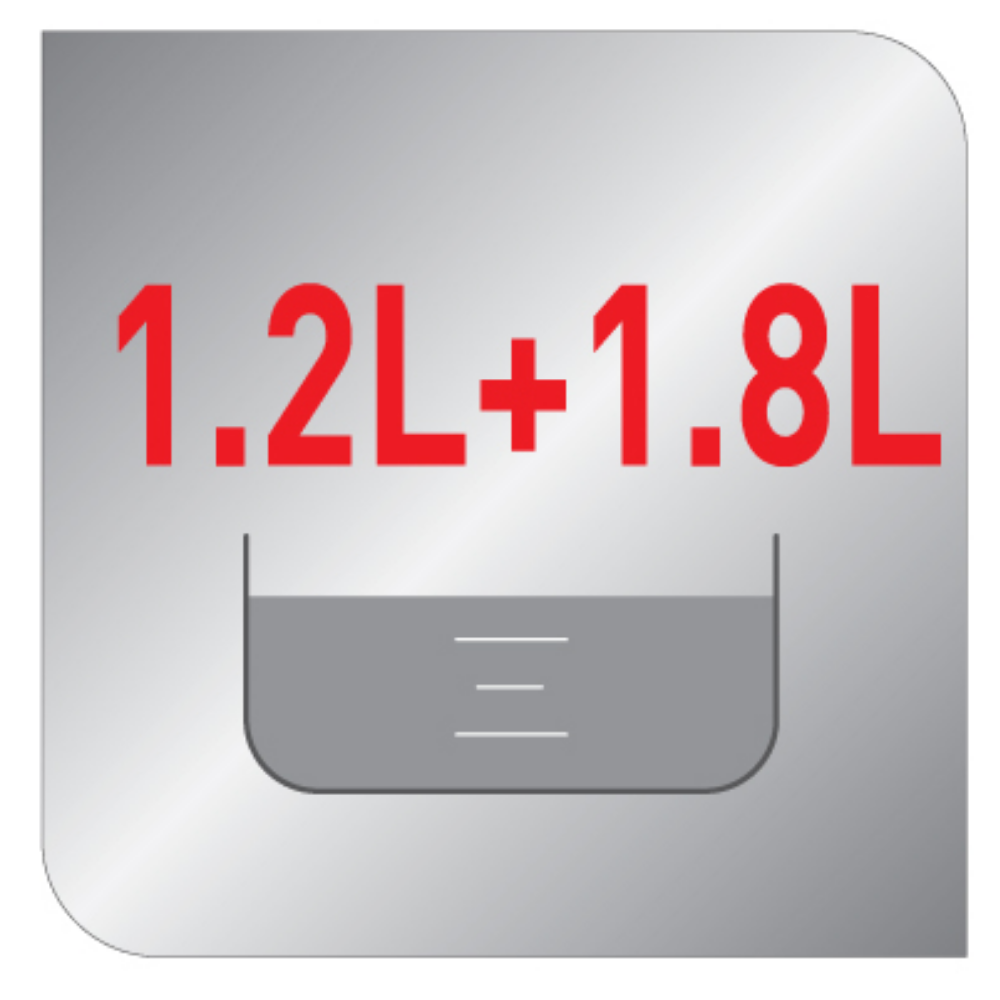
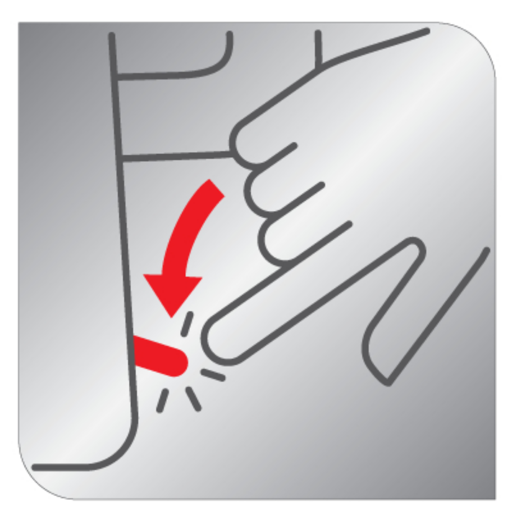
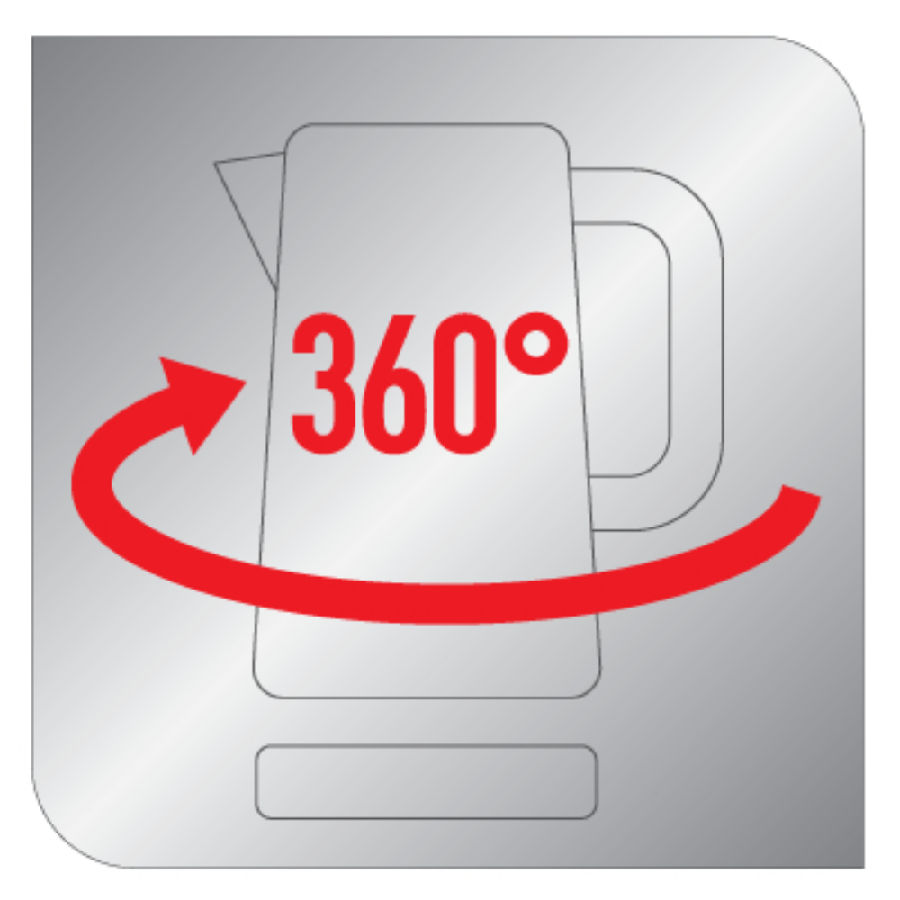
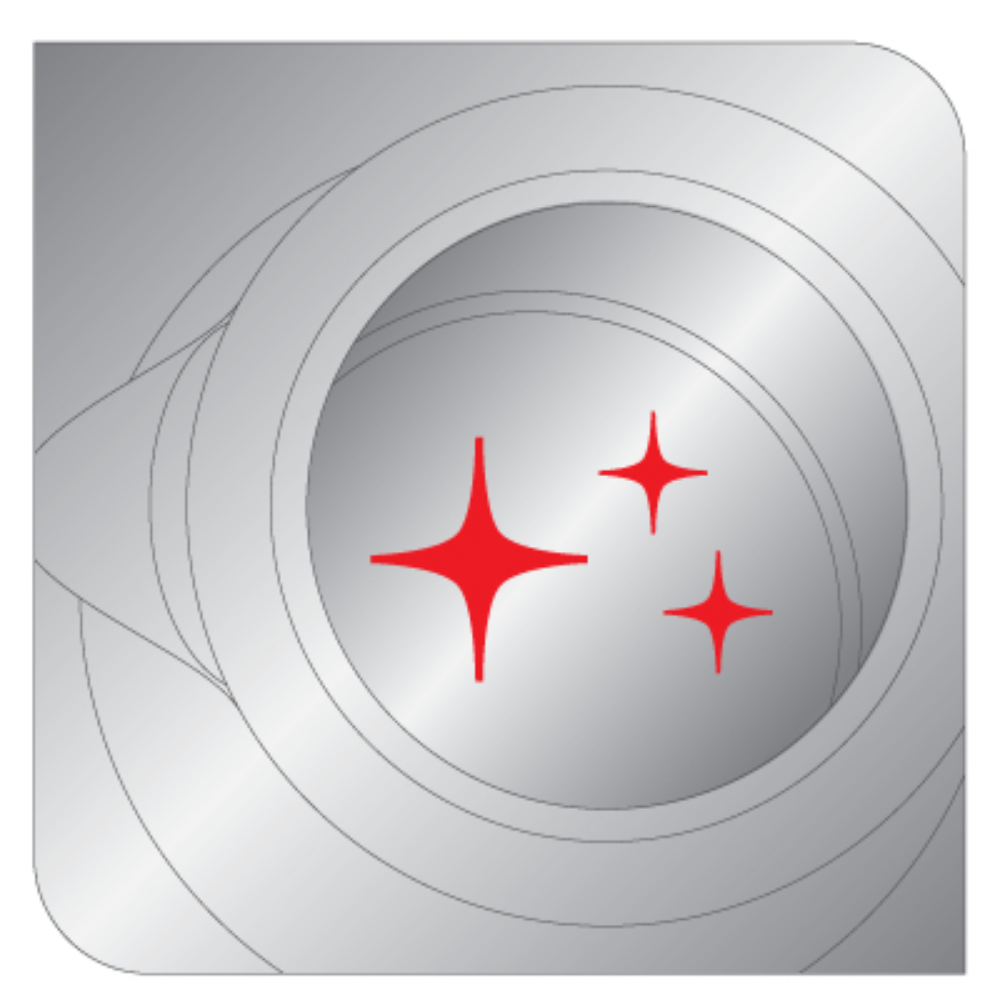
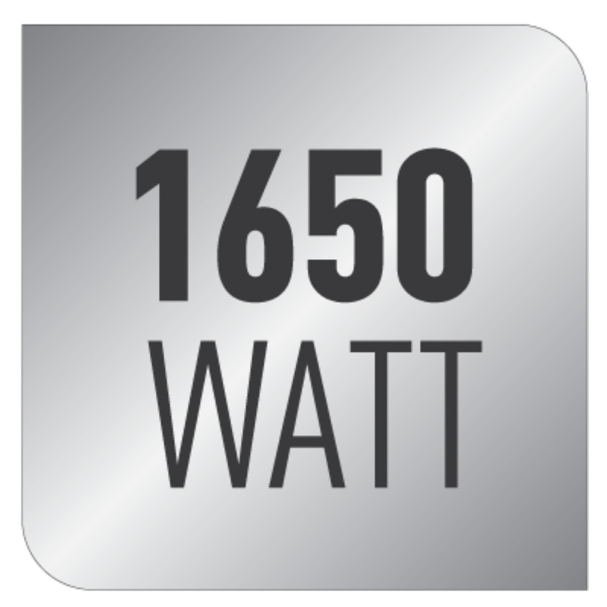

<style type="text/css">.product-description {
  max-width: 1200px;
  margin: 0 auto;
  padding: 40px 20px;
  background-color: #ffffff;
  color: #333;
}

.feature-grid {
  display: grid;
  grid-template-columns: repeat(3, 1fr);
  gap: 40px;
}

.feature-item {
  text-align: center;
  background-color: #ffffff;
  border-radius: 12px;
  padding: 20px;
  box-shadow: 0 3px 10px rgba(0, 0, 0, 0.08);
  transition: transform 0.3s ease, box-shadow 0.3s ease;
}

.feature-item:hover {
  transform: translateY(-5px);
  box-shadow: 0 5px 15px rgba(0, 0, 0, 0.15);
}

.feature-item img {
  width: 100%;
  height: auto;
  border-radius: 10px;
  margin-bottom: 15px;
  transition: transform 0.3s ease;
}

.feature-item img:hover {
  transform: scale(1.13);
}

.feature-item h5 {
  font-size: 1.1rem;
  color: #302f2f;
  font-weight: 600;
  margin-bottom: 10px;
}

.feature-item p {
  font-size: 0.95rem;
  line-height: 1.6;
  color: #555;
}

@media (max-width: 800px) {
  .feature-grid {
    grid-template-columns: 1fr;
  }
}
</style>

<section class="product-description-title" div="">
<h4><strong>Magic Tea XL Paslanmaz Çelik Çay Makinesi</strong></h4>

<p>Çayınızı ailenizle birlikte keyifle için! Tefal Tea Expert Deluxe Çay Makinesi, 1,2 L demlik ve 1,8 L su ısıtıcısına sahiptir. Yüksek kapasitesi sayesinde çayınızı ailenizle, misafirlerinizle veya ofis arkadaşlarınızla keyifle paylaşabilirsiniz. Sık sık çay demleme zahmetine son veren sıcak tutma fonksiyonu sayesinde, bu büyük kapasiteli çay makinesi su ısıtıcısı olarak da kullanılabilir ve dayanıklı paslanmaz çelik gövdesiyle uzun ömürlüdür.</p>
</section>

<section class="product-description">
<div class="feature-grid">
<div class="feature-item">
<h5>XL Kapasite</h5>

<p>1,2L Demlik ve 1,8L Su Isıtıcı ile XL Kapasite.</p>

</div>

<div class="feature-item">
<h5>Paslanmaz Çelik Gövde</h5>

<p>Paslanmaz çelik gövde ile çay yapraklarından gelen geleneksel, doğal lezzet.</p>
</div>

<div class="feature-item">
<h5>Işıklı Güç Düğmesi</h5>

<p>Işıklı güç düğmesi ve açma/kapama butonu şık bir görünüm sunar. Su kaynadıktan sonra düğme otomatik olarak kapama moduna geçer ve sıcak tutma özelliği devreye girer.</p>
</div>

<div class="feature-item">
<h5>360° Döner Taban</h5>

<p>360° döner taban sayesinde kolay kullanım sağlar.</p>
</div>

<div class="feature-item">
<h5>Gizli Rezistans</h5>

<p>Paslanmaz çelik iç yüzey.</p>
</div>

<div class="feature-item">
<h5>1650W</h5>
</div>

</div>
</section>